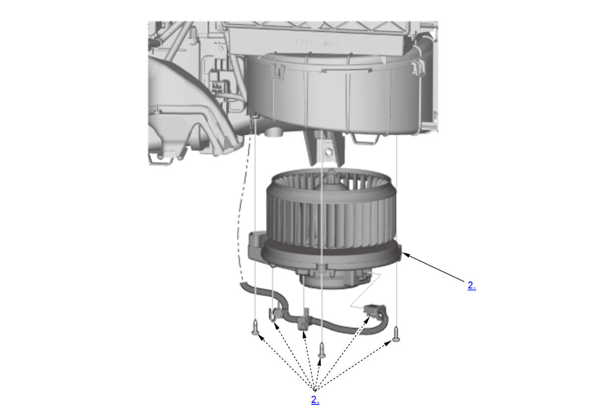

Removal and Installation: Procedure
NOTE:
Numbered call-outs in figure pertain to list numbers in following procedure.

Courtesy of HONDA, U.S.A., INC.- Glove Box Back Cover - Remove
- Blower Motor - Remove
- All Removed Parts - Install
1. Install the parts in the reverse order of removal.